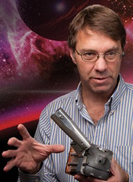

Keynote speakers
Jon Eggert received his B.S. degree in Physics in 1985 from Montana State University, and his Ph.D. in Physics in 1991 from Harvard University. His thesis research focused on pressure-induced insulator-metal transitions in xenon and hydrogen. In 1991 he worked as a postdoctoral fellow at the Institute of Physics, Chinese Academy of Sciences, Beijing, implementing an optical laboratory for diamond-anvil cell (DAC) studies. In 1992 he began a postdoctoral fellowship at the Carnegie Institution of Washington, Geophysical Laboratory in Washington, DC, concentrating primarily on studies of the solid hydrogens at very high pressure. Dr. Eggert was an assistant professor at Pomona College in Claremont, CA for two years beginning in 1994. He moved to the Colorado School of Mines (CSM), Golden CO in 1996. As a professor, Dr. Eggert continued to work on high pressure physics as well as broadening into the study of granular materials. In 1999, he took a two-year leave of absence to work at the Commissariat a l'Energie Atomique (CEA) near Paris France. At the CEA, Dr. Eggert developed a highly-accurate method for measuring x-ray diffraction of liquids in the DAC. In 2001 Dr. Eggert joined the Laser Shock Equation of State (EOS) group at Lawrence Livermore National Laboratory (LLNL) in Livermore, CA. At LLNL, he has worked on: coupling laser-generated shock waves into DACs to study He, H2 and D2 along alternate Hugoniots; analysis of isentropic compression experiment (ICE) EOS; phase transitions in shocks and ramp drives; melting of diamond; and anisotropic shock propagation in single crystals.
Dr. Jon Eggert, Lawrence Livermore National Laboratory (USA)

Dr. Yongjae Lee, Yonsei University (Korea)

Yongjae Lee is a professor at the Department of Earth System Sciences, Yonsei University in Korea and an adjunct staff scientist at HPSTAR in China. With Ph.D. in crystallography from Stony Brook University in 2001, he discovered a “super-hydrated zeolite” under pressure while working as a postdoctoral fellow at Brookhaven National Laboratory. Through joining Yonsei University in 2006, he has continued to understand high-pressure behaviors of porous materials and to design novel chemistry and possible usages. Recently, he extended his research interests into global problems and reported “super-hydrated clay” forming under moderate pressure and temperature conditions, which bears strong implications in water transport into the mantle and seismicity and volcanism along the subduction zones. He has been actively engaged in developing specialized high-pressure programs at Stanford Synchrotron Radiation Lightsource and Pohang Accelerator Laboratory including dynamic compression using short pulse laser at PAL-XFEL. Yongjae Lee is the recipient of Alvin Van Valkenburg award from Gordon Conference and Sidhu award from Pittsburgh Diffraction Conference in 2002 and the author of more than 150 research papers.
Shanti Deemyad, an Associate Professor of Physics and Astronomy at the University of Utah, recently helped solve a long-standing mystery about lithium, the first element in the periodic table that is metallic at ambient conditions. Lithium, which is a key element in electronics and battery technology, has played an important role in the development of modern condensed matter theories. The crystal structure of materials at zero pressure and temperature is one of their most basic properties. Until now, it was thought that a complex arrangement of lithium atoms, observed during cooling in the laboratory, was its lowest energy state. But the idea baffled theoretical physicists since lithium has only three electrons and therefore should have a simple atomic structure. Deemyad’s new study combined theory and experimentation to discover the true structure of lithium in its lowest energy state at cold temperatures. Deemyad joined the faculty as an assistant professor of physics and astronomy in 2010. Her lab is divided in two major areas: quantum solids and highly correlated electron systems with an emphasis on studying the nature of electronic interactions; and high pressure guided synthesis of materials with new or enhanced properties for energy storage and transport.